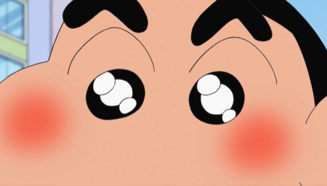

- 이름
- 성격
- 좋아하는 음식
- 특이사항
자기소개
번호를 클릭하세요
'1년 365일'시간(時間)이라는 도화지(圖畵紙) 위에 실천(實踐)이라는 붓으로, 우리는 인생(人生)이라는 그림을 그리는 것이라 생각을 해봅니다.
그래서 2004년에는 각자 자기가 원하는 그림을 구상하고, 계획하고, 생각하면서, 훌륭한 삶의 그림을 그려야 한다고 생각합니다.
그런데 그림도 무작정 그리면 안됩니다.
열정과 패기를 가지고, 철저한 계획과 준비와 끊임없이 훈련하면서 그려야 합니다.
거기에 언제나 '상냥한 웃음'과 '아름다운 친절'과 '존경의 인사'라는 '물감'을 사용한다면 더욱더 아름다운 그림이 그려지리라 생각합니다. 물론 거기에 '지혜(智慧)'라는 물감까지 첨가하면 더욱 좋겠지요.
그림이라는 말을 쓰니 그 옛날 "한니발 장군"의 일화가 생각납니다.
한니발 장군은 나폴레옹보다 거의 2천년 가까이 앞선 BC 217년에 알프스 산맥을 넘어 로마로 진군했던 '카르타고'의 명장(名將)입니다. 그가 이탈리아 남부 칸나에 평원에서 로마군을 박살낸 ‘칸나에 전투’는 세계 모든 육사(陸士) 교과서에서 다뤄질 정도입니다 . 한니발 장군 부대는 프랑스를 점령하고 알프스산맥을 넘어 세계 최강의 로마를 점령했습니다.
한니발 장군이 젊었을 때 이야기입니다.
한니발 장군의 외형은 불행히도 애꾸눈이었습니다.
그래서 항상 콤플렉스를 지니고 있었습니다.
어느날 화가에게 자기 초상화를 그려달라고 했습니다. 그 화가는 사실 그대로 애꾸눈인 한니발 얼굴 모습으로 그렸습니다. 그러자 한니발은 애꾸눈인 자화상을 보면서 화를 내면서 그 화가를 꾸짖었습니다. 이번에는 다른 화가에게 부탁했습니다. 이번 화가는 앞의 화가처럼 그리면 혼날 것이 뻔하기에 정상적인 눈을 가진 초상화를 그렸습니다. 한니발은 이번에도 화를 냈습니다. 자기의 모습이 아니라는 것입니다.
또 다른 화가에게 맡겼습니다.
세 번째 화가는 한니발 장군을 비스듬히 앉히고 옆에서 애꾸눈이 안 보이는 정상적인 눈만 보이도록 비스듬히 앉히고 다른 각도에서 초상화를 그렸습니다. 나중에 완성된 그림을 보고 이 화가의 지혜를 칭찬하였다고 합니다.
그렇습니다. 고정관념을 버리면서 새로운 창의적인 생각으로 삶의 지혜를 갖고 인생을 살아가야 합니다.
바야흐로 한해를 설계하고 소망을 갖는 1월입니다.
올 한해, 자기가 목표한 것에 도달하기 위해 어느 조직의 경영이든, 개인적인 생활이든 , 자신과의 약속을 지키는 것이 중요하리라 생각합니다. 그리고 올 한해 따뜻한 마음을 가지고 서로 나누고 베푸는 한해가 되었으면 합니다.
우리가 잘 아는 영어의 커뮤니케이션(communication)이라는 말이 있습니다.
굳이 우리말로 옮기면 소통, 연락, 전달 등의 뜻이 되는 이 말은 어원(語源)이 라틴어 커뮤니카레에서 비롯됐습니다. 라틴어 커뮤니카레는 '나누다' 라는 뜻입니다. 즉 커뮤니케이션(communication)은 서로 나누는 것입니다.
2004년------- 서로 사랑을 나누고, 미소를 나누고, 정보를 나누고, 정을 나누고......
그래야 우리의 삶이 " 천국의 계단"으로 하나씩 오르는 것이 아닐까요??????.
요즈음 인기있는 책이 있습니다.
『내 인생 어떻게 살것인가?(= What should I do with my life? )』
12월, 자연의 순리대로 싸늘한 겨울이 왔습니다.
어김없이 12월의 겨울은 정리와 반성과 죽음 이라는 단어를 떠올립니다.
“죽음”이라는 말(言)앞에 “조선시대 사육신처럼 의연하고 지조 있는 사람이 있을까?“라는 생각을 해봅니다.
조선시대 한글창제의 큰 업적을 남긴 세종(1450년)대왕 이 54세의 나이로 세상하직하고 뒤를 이어 문종이 37세에 왕위에 오릅니다. 대체로 세종에 못지 않게 문 (文).무(武)를 갖춘 우수한 제왕의 기질을 타고났던 문종(文宗)은 불행히도 1452년 5월 재위 2년 3개월만 에 세상을 떠납니다.
나이 어린 세자(단종)를 보필하라는 명령을 받고 그 뜻을 유지하기 위해 어린 단종을 몰아내고 수양대군(세조)의 왕위찬탈에 반감을 삼은 사람들이 사육신(死六臣=성삼문, 박팽 년, 이개, 하위지, 유성원,유응부)입니다. 하늘아래 두 임금을 섬길 수 없다고 끝까지 세 조를 왕으로 섬기지 않은 사람들이지요. 이 사람들은 단종을 다시 왕위에 올려놓으려는 음모를 하다가 세 조의 신하 한명회에게 기밀이 누출되어버렸습니다. 세조는 이 사람들을 잡아다가 고문하지요. 문초 하면서 성삼문이 세조를 “나으리‘라고 꼬박꼬박 말대꾸하자 무사들을 시켜 시뻘겋게 달군 쇠로 성삼문의 다리를 꿰고 팔을 잘라내 버렸습니다. 그래도 성삼문은 태연한 표정으로 조용히 한마 디...
“나으리의 형별이 참옥하오 그려"
그러면서 성삼문은 세조 옆에 있는 신숙주를 꾸짖습니 다.
"나와 네가 집현전에 있을 때 세종대왕께서 왕손(단종)을 안고 산보하며 “내가 세상을 떠난뒤에 그대들은 부디세자를 보호하라”라고 하였건만 너 혼자 잊어버렸단 말인가“라며 신숙주를 나무랐다 고 합니다.
---그래서 지금도 숙주나물이라는 말이 있는데 이는 배반한 신숙주를 입에 넣고 질겅질 겅 씹으라고 해서 숙주나물이라고 한답니다.(믿거나 말거나)-----
성삼문이 죽은 뒤 그 재산을 몰수 해보니 과연 세조가 즉위한 뒤의 녹(錄)은 하나도 먹지 않고 쌓아두었는데 그의 방에는 거적이 깔려있고 그 밖에 아무것도 없는 가난한 살림이었다고 합니다. 사육신의 지조와 절개 참 대단하지요.
죽음은 삶의 거울이라고 생각합니다. 한사람의 평가는 죽는 순간 드 러난다는 것이지요.
어떻게 보면 삶과 죽음은 별개의 것이 아닌 것 같습니다. 어떻게 죽을 것인가를 생각하면 어떻게 살 것인가라는 대답이 나옵니다. '죽음'이란 극한 상황에서 단 몇분 만에 천국과 지옥을 경험하다시피 한 러시아의 유명한 작가 ‘도스트에프스키’의 일화가 생각납니다.
28세 포병장교였던 시절, 그는 혁명 가담죄로 군사재판에서 사 형선고를 받고 시베리아 형무소로 보내집니다.
영하 50도를 웃도는 설한의 땅에서 그는 결국 총구(銃口) 앞에 서게 됩니다. 집행관이 5분을 주고 인생을 정리하라고 했습니다. 그의 생명은 이제 5분뿐입니다. 그는 마지막 5분을 어떻게 쓸 것인가 생각했습니다.
우선 가까운 사람들에게 안부를 보내는 시간으로 2분,
오늘까지 살아온 인생을 정리하는데 2분,
그리고 남은 1분은 주변의 산하를 돌아보기로 했습니다.
가족 친지들을 잠깐 생각하는 동안 2분이 후딱 지나갔습니다.
그는 자신의 삶을 되돌아보앗습니 다. 3분이 지나면 없어질 나의 삶은 어디로 가는 것일까? 뉘우침과 한스러움이 머리를 스칩니다. 그리고 허 송한 28년의 세월이 뼈저리게 느껴졌습니다.
“다시 한번 살수만 있다면, 정말 매 순간 최선을 다하는 삶을 살수 있을텐데.....”
입술을 깨무는 순간 갑자기 주위가 소란해져 눈을 떳습니 다.
흰 깃발을 흔들며 달려오는 병사때문이었지요. 황제의 사면령(赦免令)이 도착한 것입니다.
참으로 극적으로 그는 죽음 끝에서 생명을 연장받을 수 있었습니다.
그 벼랑끝을 체험한 도스토예프스키는 그로부터 고질적인 간질병을 앓으면서도 그 유명한 ‘죄와 벌’ ‘카라마조프가의 형제들‘ ’백치’같은 세계문학사의 위대한 걸작을 남겼습니다.
우리나라 어느 대기업가는 자기 자식을 통통배에서 고기잡는 것부터 가르쳤다고 합니다.
“사람 은 자기가 경험한 것을 중심으로 세상을 이해하고 살아갑니다.
세상은 더불어 살아가야 한다는 것, 사회는 잘사는 사람과 못사는 사람, 좋은 환경과 나쁜환경이 함께 어우러져 있다는 것을 몸으로 가르치기 위해 그렇게 했습니다. 부모가 자식한테 주기 싫지만 반드시 줘야 할것이 ‘고생’입니다. 세상에는 지름길과 아스팔트길 만이 있는 것이 아니라는 것을 자식들한테 깨닫게 해주고 싶습니다.“
동원산업 김재철회장의 말입니다.
문득 어릴적 대추나무 열매를 따기 위해서 막대기로 나무가지를 때리는 것을 기억합니다. 그럴 때마 다 우-수수 대추열매는 떨어졌지요. 나무입장에서 보면 큰 아픔이었지만 그 다음해 많은 결실을 위해서는 그 고통을 인내해야 된다는 것을 알았습니다. 또한 어릴 때 밭에 하지(夏至)감자를 심었던 적이 있습니다. 그런데 감자를 통째로 심으면 썩지만 몇 개로 잘라 나누어서 심으면 감자가 열린다는 것도 알았습니다. 감 자입장에서는 자르는 아픔이 있어야 많은 성숙의 결과가 있다는 것입니다.
바야흐로 고통과 시련의 계절입니다. 사는 것에만 매달려온 우리, 다시금 맞는 한해의 벼랑위에서 그러한 우리의 일 상을 가라앉히고 지금까지 살아온 날들의 내 모습을 생각해 볼 때가 아닌가 합니다.
죽어가는 삶이 아 니라 살아가는 삶을 위해서.......
요즘 개혁이란 어휘가 사회뉴스로 많이 대두되는 세상입니다.
우리나라 오백년 조선역사에서 세 가 지 큰 반정이 있습니다.
조선조에는 연산군을 폐위(廢位)시킨 중종반정(中宗反正 )과
광해군을 몰아낸 인조(仁祖)반정,
그리 고 정조 대왕의 문체(文體)반정 등 세 가지 반정이랑 있습니다. 반정(反正) 이 란&n bsp; 문자 그대로 잘못된 것을 바르게 되돌려 놓는다는 뜻입니다. 지금의 개혁과 같은 의미겠지요 .&l t; ; BR>앞의 두 가지는 피를 뿌린 권력 투쟁의 쿠테타이지만 문체반정(文體反正)은 청소년들에 게 올바른 글을 가르치고자 하는 통치자의 주도면밀한 문화혁명(문화혁명)이라고 할 수 있습니다. 우리나 라 에서 굳이 문화 르네상스(Reneseance)를 찾는다면, 중국의 문물 속에서 서구의 새로운 사상과 근대과학이 묻혀 들어 온 영조- 정조 시대가 아닌가 합니다. 특히 세종보다도 학구파였던 정조는 경전과 역사에 통달하여 홍재전서를 비롯한 수십권의 책을 저술하였으며 규장각을 설치하여 신하 들 에게 직접 강의를 했던 지식통치자였습니다. 당시 정조대왕은 시중에 나도는 금병매, 홍루몽과 같 은 음습한 소설등을 패관잡기(稗官雜記)라 하여, 수입은 물론 독서 금지령까지 내렷습니다
젊은 이 들 이 이런 글에 물들면 품성이 경박해지고 정신이 황폐해진다는 것이 선현들의 지론이었고 정조대왕의 생각 이 었 기 때문입니다.
바야흐로 책 읽기에 좋은계절입니다.
독 서가 학생들의 지성과 감성을 살찌우는 활동이 되기 위 해서는 좋은책, 즉 양서(良書)를 읽어야 합 니다. 이번 가을에 학생들이 한번 꼭 읽었으 면 하는 책은 ‘주 홍글씨, 카라마조프형제 들, 로마인이야기, 제왕들의 책사(策士) 등을 권합니다.
그 중의 하나가 1850년 간 행된 17 세기 중엽 청교도의 식민지 보스턴에서 일어난 간통사건을 다룬 작품“ 주홍글씨‘입니다. 늙은 의사와 결혼 한 ’헤스터 프린‘이라는 젊은 여인이 간통한 벌(罰)로 공개된 장소에서 “A"(adul ter y)라는 글 자 를 가슴에 달고 일생을 살라는 형을 선고받습니다.
이책에서 아주 중요한 것은 남편 칠링워 스 는 자기 부인과 간통한 사람을 알고 복수하기로 마음먹지요.
여기서 지은이 호온소온은 “인간은 인 간 자신 을 악마로도 변화시킬 수 있는 능력을 가지고 있는 존재”임을 예시하고 잇습니다. 왜냐하면 부인의 남 편은 부인과 간통한 상대를 정신적으로 아주 잔인하게 복수하고 있었기 때문입니다. 나중에 상대자는 여자 에게 말합 니다.
“헤스터! 우리는 이 세상에서 제일 나쁜 죄인들은 아닙니다. 오염된 목사보다도 더 지독한 죄인이 있답니다. 저 늙은이(칠링워스)이의 복수는 나의 죄보다도 더 검었습니다. 그는 냉혈적 으로 인간 가슴의 고결 함(the sanctity of a human heart)을 범했습니다."
즉 외형적인 죄도 나쁘 지 만 그 보다 더 나쁜 것은 인간 속에 남아있는 마지막 가슴의 성역을 냉혹하게 잔인하게 짓밟는 칠링 워스 는 더 나쁘다는것입니다 .
엊그제 오랜만에 미국에 사는 누나가 귀국했습니다. 형제자매가 모인 자리 에서 서운한 것을 표현하 다가 하마터면 싸움이 벌어질뻔 했습니다. 폭풍우가 지나고 잠시 생각했습니다.< B R>그 래 내가 죽자, 내가 낮아지자, 내가 욕심을 버리자, 서운함을 버리자, 자존심을 버리자.
그리고 나 서&am p;n bsp; 내가 잘못했다고 했더니, 환한 분위기로 바뀌었습니다. 우리 인간들은 다들 자기입장에 서만 생각합니다.
이런 질문이 있습니다.
“미국 대통령 ‘부시’와 역시 독 실한 기독교 신자인 ’링컨‘의 차이점(差異点)은 ? 부시는 하나님이 자기편이 되도록 기도한 반면, 링컨은 그가 하나님 편에 설 수 있도록 기도했다는 것입니다. 그 결과 , 하나는 남북전쟁을 종료시키고 화합을 이룬 반면, 하나 는 지금 이라크에서 벌어지는 전쟁의 피해와 세계 여러나라가 테러의 공포로 불안을 만들고 있습니다.< BR>오늘도 싸늘한 바람에 낙엽 이 툭툭 떨 어지고 바람에 옷깃을 여미는 겨울의 초입(初入)입니다. 오늘 연구수 업을 마치고 생각해봅니다 . 그리고 고민해봅니다.
무능한 선생은 말로만 떠들며 테스트만 하고
훌륭 한 선생은 설명할 줄 알고 ,
유능한 선생은 시범을 보여주며
위대한 선생은 학생들에게 영감( 靈感)을 준다는 말을.. ....
오늘 하루도 학생들한테는 흥부가 되기를 바랬지 만 놀부 역할만 한 것은 아닌지... < BR>남에게는 흥부가 되어도 나한테는 놀 부가 되어하는 데. ....
그런 말이 생각납니다.
“아무리 훌륭한 천문학자라 도 하늘의 별을 쳐다보는 데만 정신을 팔고 있으면, 땅에 있는 돌에 걸려 넘어질 수 있다“ 것을.....
머리는 걱정하기를 좋아합니다.
가슴은 기도하기를 좋아합니다.
머리는 따지기를 좋아합니다.
가슴은 이해하기를 좋아합니다.
머리는 앞서가기를 좋아합니다.
거슴은 같이 가기를 좋아합니다.
머리는 만족을 좋아합니다.
가슴은 부족도 좋아합니다.
머리는 받기를 좋아합니다.
가슴은 주기를 좋아합니다.
머리는 곱하기를 좋아합니다.
가슴은 나누기를 좋아합니다.
바야흐로 맛있는 과일 사과(沙果)의 계절입니다. 엊그제 10월 24일은 둘이서 용서하고 사과하는 날이라고 합니다. 인류의 역사에서 중요한 의 미의 세개의 사과가 있습니다.
첫번째 사과는 아담의 사과입니다(정확히 사과라는 과일은 아니 지 만....) 인간에게 “모든 것은 먹되 에덴동산 중앙에 있는 실과는 먹지말라”는 하나님의 명령을 어기고 아담과 하와가 첫 번째 원죄(原罪) 를 저지른 사과입니다. 즉 인류에게 선과 악을 가르친 “도덕의 사과”입니다.
두번째 사과는 뉴턴의 사과입니다. 사색에 잠긴 뉴턴의 머리 위에 떨어져 만유인력의 법칙을 발견하게 한 “ 과학의 사과”입니다. 또한 열정과 창의성의 사과입니다. 이것은 그저 가만히 있다가 갑자기 발견한 것이 아니라 그동안 그 문제에 대해서 골 똘 히 생 각하고 집중했기에 그런 결과가 나오지 않았나 생각합니다.
마 지막으로 스위스의 전설적 영웅 빌헬름 텔의 사과입니다.
자기아들 머리 위에 사과를 올려 놓고 활시 위를 당긴 용기와 믿음의 사과입니다. 인간이 인간으로부터 벗어나게 하는 사과라는 겁니다.
이외에도 "내일 지구가 멸망하더라 도 나 는 내일 한 그루의 사과나무를 심겠다"고 말한 철학자 스피노자는 우리에게 '미래에 대한 희망'을 이야기했습니다.
엊그제 신문에서 기업체의 인사 담당자들이 뽑은 21세기 인재가 갖추어야 할 10대 소양과 자질에 다음과 같은 10가지를 열거했습 니다.
◈전문지식과 폭넓은 교양을 갖춘 사람
◈국제감각과 외국어 구사능력을 가진 사람
◈진취적인 사람 ◈도 전과 성취의식이 있는 사람
◈유연한 생각과 창의력을 가진 사람
◈올바른 가치관을 가진 사람
◈인간미 있는 사 람
◈책임감 있는 사람
◈협력하는 사람
◈예의바른 사람
이런 것을 갖춘 사람이라면 아마 완벽한 사람이겠죠? 이런 것을 볼 때 인류 역사에서 중요한 세 개의 사과와 관련이 있다는 생각이 듭니다.
섣부른 짐작일지 모르나, 요즈음 학생들 중 ‘ 희생’이나 ‘헌신’, ‘책임’, ‘배려’ 같은 가치를 가슴에 품고 사는 학생들이 몇 명이나 될 까? 가끔 생 각해봅 니다. 그저 도덕교과서와 시험지 위에나 존재하는 단어로만 생각하는 것은 아닐지..
내일 11월 3 일, 학생의 날을 맞이하여 우리학교 학생들이 열정과 패기와 끈기로 16, 17, 18페이지의 인생 한 페이지 한 페이지를 머리와 가슴으로 멋있게 곱 하기와 나누기 를 하는& nbs p; 학창시절이었으면 합니다.
언젠가 사마천의 사기에서 본 한문장(漢文章)이 생각납니다. < /P>
도리불언 (桃李不言 ) 하자성혜(下自成蹊)
--복숭아와 오얏나무는 굳이 말하지 않더라도 아름다운 꽃과 열매가 있어 사람들이 모이기때문에 저절로 길이 생긴다’
구름 한점 없는 하늘과 가을 들녘풍경은 참으로 한 폭의 그림과 같습니다.
이런 때 서정주 님의 “푸르른 날”이라는 싯구가 생각 납니다.
눈이 부시게 푸르른 날은
그리운 사람을 그리워하자
저기 저기 저 가을 꽃자리
초록이 지쳐 단풍드는데
눈이 내리면 어 이하리야
봄이 또 오면 어이하리야
내가 죽고서 네가 산다면
네가 죽고서 내가 산다면
눈이 부시게 푸르른 날은
그리 운 사람을 그리워하자 서정주 ----“푸르른 날”
한 젊은이가 있었습니다.
그가 어릴 때 아버지는 다른 여자를 만나서 가정을 버리고 떠나갔습니다. 아버지의 가출로 엄마는 세 상을 떠나고 하루아침에 집안은 풍비박산이 납니다. 이 모든 불행은 아버지 때문이었습니다. 그러던 어느 날 이 젊은이는 아버지의 죽음 소식을 듣게되고 아버지의 빚이 자신에게 상속된 사실도 알게됩니다. 아버지에게 또 다른 아들이 있었다는 사실을 접하고 그 아들을 통해 빚을 떠맡을 수 있는 계모를 찾기 위해 배다른 동생과의 반갑지 않은 동거를 시작합니다.
이런 과정을 통해서 자신이 가졌던 아버지의 마지막 이 야기를 접하면서 아버지를 향하여 조금씩 마음을 엽니다. 그리고 결국 아버지를 용서합니다.
오늘 보았던 영화 “ 오 부라 더스”의 줄거리입니다.
용서와 사랑의 중요성을 강조한 영화라 생각합니다. 아울러 용서와 사랑보다 이 세상에 아름다 운 것이 있을까라는 생각을 해봅니다.
저는 학생들에게 산다는 것에 삶의 의미를 두라고 말합니다.
그것은 몇 년 전에 읽은 빅터 프랭클인이 쓴 “죽음의 포로 수용소에서”라는 책에서 본 의미요법 (logo theraphy)이라는 개념을 알고 부터입니다. 많은 사람들이 낙심하고 절망하며 좌절하고 있을 때 유태인 빅터 플랭클린은 삶에 의 미를 부여 하고 생존에 대한 열망과 의지로 살아남을 수 있었던 것입니다. 많은 사람들이 언제 죽을지 모르는 상황에서 절망하고 있을 때 어떤 사 람은 땅바 닥에 떨어진 유리조각으로 내일이 있다는 희망으로 아침에 일어나 면도를 하는 사람을 보았습니다.
그런데 결국에는 그사람이 끝까지 살아 있더라는 것입니다.
요즈음 “할 수 있는데 안하기”와 “하고 싶은데 못하기 ” 사이에서 끊임없이 고뇌하는 학생들을 볼때마다 삶에 의미를 가지라고 침을 튀기며 부탁하고 싶습니다.
언젠가 본 “저 푸른 초원위에” 라는 드라마에서 이런 의미있는 대사가 나왔었습니다.
『 행운을 가져다주길 바라면서 사람들은 네 잎 클로버를 열심히 찾지.
그런데 “너 그거 알아?”
우리가 네잎 클로버(cl over)를 찾기 위해 아무 생각없이 밟았던 무수히 많은 세 잎 클로버가 항상 거기에 있었다는 것을......
그리 고 세잎 클로버가 무거운 우리들의 신발에 밟힌다는 것을.....
세잎 클로버의 꽃말은 행복이래. 네 주위엔 네 잎 클로버보다 수없이 많은 행 복이 있어. 』< /P>
어제 맨 끈 은 오늘 허술해 지기 쉽고 내일은 풀어지기 쉽습니다.
오늘 저녁 느슨해진 끈을 졸라매고 마음속에 외로움의 적조(赤潮)를 걷어내고 내일 아침 하나님이 주신 나의 일터, 학교로 출근하고자 합니다.
발 밑에 널려있는 수많은 세잎 클로버를 감상하며, 나날이 다시 끈을 잡아매야 끈이 풀리지 않을텐데....
어느 중년 부인이 응급실에 실려 왔습니다. 갑작스런 쇼크로 병원에 온 것입니다. 그러나 아쉽게도 다시 세상을 볼 수 없게 되었습니다. 그 런데 그의 손에는 꽉 쥐고 있는 무언가가 있었습니다. 조심스레 펴보니 화투장의 3광과 8광이 쥐어져 있었습니다. 화투놀음을 하다가 일명 “3,8 광땡“이라는 갑작스런 행운이 왔기에 너무 좋아 쇼크를 한 것입니다.
가을 낙엽이 하나둘 떨어지면 꼭 생각나는 성경구절 전도서의 “ “헛되고 헛되며 헛되고 헛되니 해 아래 있는 모든 것이 헛되도다”. 라는 문 구 입니다.
일본어를 전공했기에 대학시절 일본영화를 가끔 볼 기회가 있었습니다. 감명깊게 본 영화 중에 하나가 ‘가세키(化石)'라는 영화입니다.
50대의 한 사나이의 삶을 세밀하게 분석하는 내용입니다.
이 사람은 빈손으 로 사업을 시작하여 재벌이 됩니다.
그러나 그는 유럽에 사업차 가던 중에 함께 동행한 비서에게 걸려온 의사의 전화를 우연히 듣다가 자 기 의 병이 암이라는 사실과 잘 치료해야 1년 정도 밖에 더 살 수 없다는 사실을 알게 됩니다. 모든 것이 삽시간에 무너지는 순간이었습니다. 절망 과 좌절 자포자기와 허무속에서 그는 자기를 잃어버립니다.
그러나 죽음을 1년 앞두고 비로소 그른 지금까지 자기가 살아온 삶의 진실을 알게 됩니 다. 자기가 정신없이 해온 그 일들이 사실은 정말 인간이 해야 할 일들이 아니었습니다. 돈을 벌기위해 바쁘게 뛰어다니다가 많 은 귀중한 일들을 망각하고 있었음을 깨닫게 된 것입니다.
그는 참으로 오랜만에 자기를 키워준 계모를 찾아가 고개를 숙입니다.
하나 밖에 없는 동생을 만나 나란히 하루 밤을 지내면서 형제의 우애를 되새겨봅니다. 수 십년만에 전쟁터에서 사귄 옛 친구도 방문합니다. 그의 귀에 는 죽은 아내가 들려주던 “헛되고 헛되며 헛되고 헛되니 해 아래 잇는 모든 것이 헛되도다. 하는 구약성서 전도 서 1장의 말씀이 생생하게 울려옵니다. 지금까지의 노력과 분투와 분주함은 오로지 자기 자신과 두 딸만을 위한 것이었습니다.
그러나 그는 이제야, 인생이란 그 이상이며 하나님이 준 시간은 너무나도 귀중한 선물이라는 것을 깨닫게 됩니다. 그렇다면 이제 앞으로 남은 몇 달은 어떻게 살 것인가?
이 생각에 잠긴채 영화는 막을 내립니다 .
저는 이번에 병원을 자주 다니면서 배운 단어가 과유불급(過猶不及)이란 단어가 떠올랐 습니다.
옆 병상의 67세 할머니는 오전내 새벽부터 요가와 등산 수영 등 고된 운동이 도리어 역효과를 내서 쓰러졌고 어떤 40대 아저씨는 동호인 축구시합에서 오버헤드(overhead)킥을 하다가 허리와 머리를 다치는 불상사를 당해 응급실에 왔습니다. 이 모두다 나이를 생각 하지 않은 “지나침”의 결과라 생각합니다.
주변에서 보면 가끔 우리네 삶의 목적을 잃어버린 사람들이 많이 있습니다.
정말 쓸데없는 것에 미치는 사람들이 많습니다. 운동에 미치고, 돈벌이에 미치고, 이성 연예인에 미치고, 음악에 미치고,....
우리가 생각하는 재산에는 ; 두가지가 있지요. 집이나 돈, 학벌이나 건강 등과 같은 눈에 보이는 재산과 사랑, 믿음, 희망이라는 눈에 보이지 않는 재산이 있습니다. 그래서 우리가 흔히 말하는 비전(Vision)이란 육안(肉眼)보다 마음의 눈으로 보는 것이라 생각합니다.. 젊은 학창시절 눈에 보이는 이 비전을 갖지 않으면 실패하기 쉽고 타락하기 쉽습니다.
오늘도 주변사람들의 삶을 보면서 논어의 유명한 문장 이 생 각납니다.
學而時習之 不亦說乎(학이시습지 불역열호)
배우고 때로 익히면 이 또한 기쁘지 아니한가...... < /
며칠전 ꡒ
~~~~~~~매미~~~~~“라는 이름의 태풍이 휩쓸고 간 경남.북지역은 가히 아수라장이 되었습니다. 참으로 안타까운 일입니다.
엊그제 신문에서 미국과 우리나라의 재난 대처상황을 비교한 표를 보았습니다. 미국은 태풍이 오기 2주전부터 준비하고 대비시키는데 우리는 고작 4일전부터 비상근무지시하고 태풍상륙 8시간 앞두고서야 해안정비에 허둥지둥했다는것입니다.
언제까지 우리나라는 이래야 하는지.....
그러나 한가지 위로가 되는 것은 이런 일이 있은 뒤에 정말 우리 사회가 악한 사람들보다는 선하고 아름다운 사람들이 많이 있다는 사실입니다.
자기 이름을 밝히지 않고 1억원을 수재의연금으로 낸 40대 가장(家長)의 이야기며, 지금도 23만명이라는 사람들이 자원봉사자로 나서 수재를 당한 사람들을 돕는다는 이야기를 들을 때, 그래도 아직은 “우리“라는 울타리가 살만한 가치가 있구나라고 생각이 들지만 또 한쪽에서는 도와주지는 못할망정 남의 아픔은 아랑곳하지 않고 태풍으로 부서진 바다양식장의 고기를 낚으러 그 주변에서 낚시하는 꼴불견인 사람들의 모습과 어수선한 틈을 타 남의 것을 도둑질하는 사람들의 이야기를 들으면 인간들의 밑바닥 내면 깊숙이 쌓인 더러운 원죄들의 앙금들이 올라오는 것을 봅니다..
그래서 인간의 심성은 언제나 이분법으로 나뉘는가 봅니다.
선(善)인가 악(惡)인가.....
대학시절 읽은 미국의 소설가 존스타인 백이 쓴 “분노의 포도”(The Grapes of Wrath)라는 작품에서도 지금처럼 힘든 시름에 빠진 사회에서처럼 이런 현상이 극명하게 나타납니다.
1930년대 미국의 대공황(大恐慌0을 묘사한 사실주의에 입각한 소설이지요. 이 소설을 읽으면서 미국도 이렇게 고통스러운 시절이 있었는가라는 놀라움과 함께 굶주림으로 먹고 사는 것이 어려우면 얼마나 인간의 삶이 파괴되는지 알 수 있었습니다.
오클라호마의 농민 조드 일가(一家)는 전국을 휩쓴 경제 공항의 여파로 살 길이 막연해지자 농장 지대인 캘리포니아로 이주하기로 합니다. 모포와 취사도구만을 그나마 고장난 낡은 자동차에 싣고, 2천 마일의 길을 가기 위해 산맥을 넘고 사막을 횡단하지요
그동안 조부모를 차례로 잃었으나, 매장할 여유도 없이 시체를 차에 실은 채 가야만 했습니다. 그들이 겨우 캘리포니아에 도착했을 때에는, 그야말로 돈 한 푼 없는 빈털터리가 되었습니다. 화려한 기대를 가지고 도착한 곳에서도 25만 명의 떠돌이 농민들이 각지로부터 모여 노동력은 구인의 숫자에 비해 십여 배나 남아 돌았고, 임금은 대지주들의 뜻대로 내려 깎일 대로 깎여 있었습니다.
온 식구가 온종일 쉬지 않고 일해도 한 끼니를 때울 수 있는 수입밖에는 되지 않았지요. 막연하나마 단결 투쟁의 의식이 싹트기도 했으나, 그것은 곧 생각의 불순으로 몰려 한층 더 심한 박해가 가해질 뿐이었습니다.
굶주림으로 괴로움을 당하고 있는 그들 앞에 익은 포도는 이미 아름다운 열매가 아니었습니다. 그것은 노동자들에게 '분노의 포도'였지요.
그들은 동맹 파업에 들어가고 지주들은 그것을 진압하기 위해 폭력단을 끌어들입니다. 오클라호마에서 농민들과 함께 이리로 온 캐시는 고용주의 앞잡이인 폭력단에게 살해되지요. 그 장면을 목격한 조드가(家)의 장남 톰은 캐시를 죽인 남자를 살해하고 정처 없는 유랑의 길을 떠납니다. 노동자들의 분노는 무르익은 포도송이처럼 커지고, 설상가상으로 농장에는 홍수가 밀어닥치지요. 그런 와중에서 딸 로자샤안(샤론의 장미)은 사산(死産)을 합니다. 그리고 강물이 범람하고 앞날을 예측할 수 없는 가운데 그녀는 아기에게 먹였어야 할 젖을,
굶어 죽어 가는, 한 나이 든 노동자에게 먹이며 신비롭고 평화로운 미소를 짓습니다.
말이 그렇지 죽어 가는 낯선 노동자에게 젖을 먹이는 로자샤안의 행동은 이 작품에서 가장 인상적인 부분입니다. 그런데 여기서도 이주하는 도중에도 선량한 사람들을 괴롭히고 약탈하는 사람들이 있습니다.
이 작품은 당시의 역사적 사실을 기록하는 차원을 넘어서 끝없이 이상을 추구하며 살아가는 의지적인 인간상과 고난을 극복하려는 강인한 인간상을 제시하고 있다는 점에서 가치가 있다고 생각합니다. 어떠한 역경에도 굴하지 않는 강인한 의지와 따뜻한 인간애를 동시에 보여 준 이러한 행동은 인간이 지닌 원초적 생명력을 상징적으로 표현한 것이라 할 수 있지요. 궁극적으로 작가가 이 작품에서 다루고자 했던 것은 고통과 고난중에서도 피어나는인간에 대한 의리 , 사랑, 그리고 희망이었습니다.
마치 박경리 님의 토지(土地)라는 대하소설(大河小說)과 비슷한 내용의 가족사(家族史)라고 생각합니다.
'두 사람은 한 사람보다 나으리라. 그것은 저희가 수고함으로써 더 나은 보답을 얻기 때문이다. 쓰러질 때는 한 사람이 그 벗을 일으켜 줄 것이다. 혼자 쓰러진 자는 불행하도다. 이는 일으키는 자가 없음이리라.' '또, 둘이 같이 자면 따스하도다. 혼자 자면 어찌 따스하리요. 그리고, 다른 사람이 그 하나를 치면 패하고, 둘이서는 이를 막을지니, 세 겹 줄은 쉽게 끊어지지 않는도다(----분노의 포도 중에서----)
남자가 불행해지는 3가지 조건이 있다고 합니다. 초년 출세, 중년 상처(喪妻), 말년 극빈(極貧). 초년 출세는 능력이 없어서 못하고 중년 상처는 기적적으로 넘겼으니 이제는 말년 극빈하지 않기 위해 절약하는 법을 배우는 중입니다. 더욱이 40대부터는 성냄(怒)을 잘 다스려야 한다고 합니다. “화내다”를 영어로 anger 이라고 하지요. 이것 앞에다 영어철자 d를 넣으면 danger(위험한)입니다. 즉 화를 내면 위험하다는 뜻이겠지요. 나이 들수록 열관리와 자기관리를 잘하는 것이 아름답게 늙어가는 것임을 깨닫습니다.
오늘도 우리사회가 자원봉사자가 점점 많아져서 사회의 빛과 소금이 되었으면 합니다.
저는 학급 재량활동시간에 어떤 주제를 주고 글짓기를 시키기도 합니다.
지난번 “신발”이란 주제를 주었는데 어느 학생의 글이 감동적이었습니다
난 어릴 적부터 하늘을 나는 신발을 꿈꿔왔다
그래도 높기만 했던 하늘을 날게 해주는 신발에 대한 상상은 날 사로잡기에 충분했다
우리는 힘겨운 일상생활에 찌들어 사는 틈틈이 하늘을 바라보곤한다.
나는 그런 하늘을 보며 그 하늘을 날 수 있는 신발을 상상했다. 어쩌면 땅에 달라붙어 사는 우리에겐 당연한 생각일지 모른다.
넓디 넓은 하늘을 보며 자주 오랜시간 생각에 잠겨있는 나 이지만 멍하니 하늘을 바라 볼 때면 하늘을 나는 나 자신의 모습에 심취해 힘든 일상 따위는 쉽게 떨쳐내 버릴 수 있었다.
요즘도 하늘을 나는 신발을 신고 하늘을 맘껏 휘젓고 다니는 내 모습을 상상할때면 그렇게 상쾌하지 않을 수 없지만 어릴적 가벼운 상상에 불과하다는 현실속 생각에 안타까울 따름이다.
하지만 난 아직까지 그 꿈을 버리지 않았다.
나의 소박하지만 귀중한 보물이기 때문이다.
오늘도 떠나려 한다.
하늘 위의 내 모습을 향해.......
배인숙
누구라도 그러하듯이 길을 걸으면 생각이 난다.
마주보며 속삭이던 지난날의 얼굴들이 꽃잎처럼 펼쳐져간다
소중했던 많은 날들을 빗물처럼 흘려보내고
밀려오는 그리움에 나는 이제 돌아다본다.
가득찬 눈물너머로................
누구라도 그러하듯이 거울을 보면 생각이 난다.
어린시절 오고가던 골목길의 추억들이 동그랗게 맴돌아간다.
가슴 속에 하얀 꿈들을 어느 하루 잃어버리고 솟아나는 아쉬움에 나는 이제 돌아다본다.
가득한 눈물너머로........아 ~ 아 ~ 아 ~ 아 ~ 아 ~
누구라도 그러하듯이 눈을 감으면 생각이 난다.
헤어지는 아픔보다 처음 만난 순간들이 잔잔학 물결이 된다. 눈이 내린 그 겨울날
첫사랑을 묻어버리고 젖어드는 외로움에 나는 이제 돌아다 본다.
넘치는 눈물너머로 ........아 ~ 아 ~ 아 ~ 아 ~ 아 ~
누구라도 그러하듯이 창가에 앉아 하늘을 본다
떠다니는 구름처럼 날아가는 새들처럼 내마음도
부풀어 가네 어디선가 나를 부르는
아름다운 사랑의 노래 지평선을 바라보며
나는 이제 떠나련다.
저푸른 하늘넘어 우~ 우~ 우~ 우~ 우~
저희같은 40대가 고등학교 시절
유행했던 배인숙의 “누구라도 그러하듯이”의 노래가사입니다.
원래 프랑스 샹송곡을 번안한 곡인데 들을 때마다 무언가 밀려오는 애잔함과 추억의 앙금을 흔들게하는 매력이 있는 곡입니다.
“지난 여름은 참으로 위대했습니다“라는 마리아나 릴케의 싯구가 생각납니다. 저 개인적으로 인생 최대의 엄청난 시련을 겪었고 지금도 진행중에 있습니다. 불과 1달 전만해도 남부럽지 않은 행복한 가 정이었습니다. 그러나 지금은 하나님의 섭리가 있겠거니 생각하고 더 행복해지려고 노력합니다.
지난 지난 여름방학중 저보다 더 가슴아픈 사람이 있었다면 서울 어느 역에서 들어오는 기차에 자기 몸을 던져 어린이를 구하고 자기는 다리를 잃는 부상사고를 당한 철도원 김행균씨가 아닌가 생각합니다. 요즈음 너도나도 내 것 챙기고자 머리에 투쟁이 라는 빨간띠 두루고 외치는 판국에 자기를 희생하며 남의 생명을 구한 의로운 사람이야말로 칭찬받기 충분합니다.
이러한 때에 생각나는 동화가 있습니다.
바로 쉘 실버스타인의 “아낌없이 주는 나무”입니다.
어린이들에게 남을 위해 희생하는 심성을 길러주는 그림책이지요.
어느 곳에 한그루 사과나무가 있었습니다. 이 나무는 인근에 사는 소년을 사랑했습니다.
그 소년은 그 그늘에 와 낮잠을 자기도 하고 사과를 따 먹기도 하고 그네를 매고 놀기도 했습니다. 그래서 나무는 가끔 자기와 놀아주는 소년을 사랑하며 행복하다고 생각했습니다.
그러나 소년이 자라 외지에 나가는 바람에 나무는 강사님과 학연 소년을 그리워하며 외롭게 살았습니다.
한데 어느 날 소년이 청년이 되어 찾아와 돈이 필요하다고 하자 사과나무는 자기사과를 모조리 따 돈을 마련케 해주고도 나무는 행복해 했습 니다. 그 후 청년은 결혼하게 됐는데 살집이 있으면 좋겠다하자 가지를 잘라 집을 짓게 하고서 나무는 행복해 했습니다.
중년이 되어 멀리 바다 밖에 나가려는데 보트가 필요하다하자 나무는 밑동을 잘라 보트를 만들게 하고 행복하게 생각했습니다. 노인이 되어 지팡이 짚고 귀향한 이 소년에게 나무는 베이고 남은 그루터기에 앉아 쉬라고 합니다. 그러고서 나무는 행복하다고 했습니다.
이 동화가 우리에게 주는 교훈은 아마 아이들의 이기적인 심성을 주는 행복이 무엇인지 생각게 하는 것과 이타적인 삶에도 행복이 존재한다는 사실을 깨우쳐주는 동화인 것 같습니다. 몸 던져 어린이를 구하고 자신의 한 다리를 잘린 철도원의 의로운 행동은 누가보아도 아낌없이 주는 나무임에 틀림이 없습니다. 지금은 집에서나 학교에서나 온통 받기만 하는 교육으로 일관되는 현실을 개탄하면서 좀더 우리 인간 내면의 인성과 감성을 흔드는, 그래서 더불어 사는 삶을 더욱 중요시하는 교육 패러다임으로 변화되었으면 하는 소망입니다.
오늘 하루에도 자살하는 사람이 평균 36명이나 되는 현실에 개탄하면서,
이제는 좀더 눈에 보이는 외형적이고 세상적인 욕심의 그릇을 비우고 남에게 주는것에서 오는 행복을 느꼈으면 하는 바램입니다. 저의 아내가 뇌출혈로 쓰러져 사경을 헤멧던 것처럼, 오늘과 내일에 우리 앞에 어떤 역경과 고난이 닥칠지 모릅니다. 이번에 물심양면으로 아낌없이 주는 나무가 되어주신 주변 직장선생님들과 주위사람들에게 진심으로 감사를 드립니다. 그래서 저도 앞으로 더욱 아낌없이 주는 나무가 되고자 마음속 다짐했습니다.
체념과 도피로서 자살이라는 최후수단을 쓰지 말고 역경에 당당히 맞서 싸우는 돌파형의 인간유형이 되어야 합니다.
누구라도 그러하듯이 길을 걸으면 생각 이 난다.
마주보며 속삭이던 지난날의 얼굴들이
꽃잎처럼 펼쳐져 간다 소중했던 많은 날들을
빗물처럼 흘려보내고 밀려 오는 그리움에
나는 이제 돌아다본다 가득찬 눈물 너머로 아~~ 아~~ 아~~ 아~~
누구라도 그러하듯이 거울을 보면 생각이 난다
어린 시절 오고가던 골목길의 추억들이
동그랗게 맴돌아 간다 가슴속에 하얀 꿈 들을
어느 하루에 잃어버리고 솟아나는 아쉬움에
나는 이제 돌아다본다 가득 찬 눈물 너머로 아~~ 아~~ 아~~ 아~
누구라도 그러하듯이 눈을 감으면 생각이 난다.
헤어지는 아픔보다 처음 만난 순간들이
잔잔하게 물결이 된다. 눈이 내린 그 겨 울날
첫사랑을 묻어버리고 젖어드는 외로움에
나는 이제 돌아다본다 넘치는 눈물너머로 아~~ 아~~ 아~~ 아~
누구라도 그러하듯이 창가에 앉아 하늘을 본다
떠다니는 구름처럼 날아가는 새들처럼 내 마음도
부풀어가네 어디선가 나 를 부르는
아름다운 사랑의 노래 지평선을 바라보며
나는 이제 떠나련다 저 푸른 하늘 너머로 우~~ 우~~ 우 ~~ 우~
며칠 전 2층 3학년 교실에서 시험감독하면서 창 밖의 녹색 벼 잎사귀가 잔잔한 바람에 흔들리는 모습을 보니, 마치 녹색의 바다에서 하얀 파 도가 일렁이는 모습 같았고 불현듯 70년대 고등학교 시절 유행했던 배인숙 님의 "누구라도 그러하듯이" 라는 노래가사(歌詞)가 생각났습니 다.. 지금은 랩이다 팝이다 시끄러운 소리만 있지만 옛날 노래에는 곡(曲)과 노래 가사에 의미있는 분위기를 주었습니다. 들으면 들을수록 가슴을 흔드는 노래입니다.
누구라도 그러하듯이 오늘도 우리는 나의 의지와는 상관없이 태어나서, 주어진 삶을 살아갑니다. 40세 까지를 인생의 전반전(前半戰)이라 면 40세 이후는 아마도 인생의 후반전(後半戰이라고 생각합니다. 오늘 신문에서 어떤 이는 "인생 전반전에는 목표와 희망 을 향해 뛰었다면 후반전에는 의미로 살아가야 한다"라고 써 놓았습니다.
제가 학생들에게 수업시간마다 강조하는 것이 있다면 언제나 마주치면 친절한 인사와 웃음, 환한 얼굴로 붙임성 있는 사람이 되라고 강조합니다. 어차피 사는 인생 재미있게 웃으면서 남 에게 즐거움을 주는 인생이 그리고 앞으로는 친절하지 않으면 먹고살기 힘들다고 감히 말합니다. 그래서 그런지 우리반 학생들은 다른 반 보다 유난히 웃음이 많고 유머러스하고 생기와 활기가 넘치는 교실분위기입니다.
그런 마인드에 초점을 맞추다보니 하다보니 처음 사람을 만나거나 전화통화 몇 마디만으로, 그 사람이 적극적인 사고방식을 가진 사람인지 아닌지 일처리를 야무지게 할 것 같은 사람인 지 아닌지, 이 사람이 성공 가망성(可望性)이 있는 사람인지 아닌지 어느 정도 짐작이 갑니다.
이왕 살 것이라면, 누구라도 그러하듯이 대충대충 살지 말고, 남과 다른 차별화 전략과 전술을 세우는 것이 필요합니다. 즉 각기 사람들의 다양성(多樣性)을 인정하 며 나를 적성과 개성(個性)을 특화(特化)시키자는 것입니다. 왜냐하면 앞으로의 시대는 창의적인 생각과 기발한 아이디어 그리고 디자인이 상품의 사활(死活)을 좌우할 것이기 때문입니다.
그리스 신화에 등장하는 아주 유명한 두 인물이 있습니다. 영웅 테세우스와 포세이돈의 아들인 프로크루스테스 가 주인공이지요. 우리에 게 "프로크루스테스의 침대"라는 비유로 유명하지요. 옛날 그리스 아티카 지방에서 아테네로 가려면 반드시 지나야 하는 길이 있습니다. 그런데 이길은 프로크루스테스라는 악당이 밤길을 지나가는 나그네를 초대하여 잠자리를 제공하는데 그 잠자리라는 것이 딱딱한 쇠침대였습니 다. "오늘 어딘가 쉴곳이 필요하지 않습니까?" 달콤한 말로 나그네를 유혹합니다. 이 강도를 잘 모르는 나그네는 악당 프로크루스 테스를 따라갑니다. 나그네를 자기 집으로 유인한 프로크루스테스는 나그네를 강제로 자기의 쇠침대에 묶습니다. 그리고는 나그네의 몸길이가 침대보다 짧으면 몸길이를 늘려서 죽였고 몸길이가 침대보다 길면 나온 부분을 잘라 죽였습니다. 그 침대와 몸길이가 똑같은 사람만이 목숨을 건 질 수 있었지만 사실 그런 경우는 거의 없었습니다.
그러나 결국 나중에는 프로크루스테스 도 테세우스에게 자기의 침대에 묶인 채 죽고 말지요.
이 아이러니한 전설에서 우리는 몇 가지 교훈을 얻습니다. 첫째는 자기의 기준과 잣대로 남을 함부로 평가하는 것이지요. 정말 함부로 해서도 않되는데...... 그런데 전 요즘 마음 속에 자주 이런 마음을 갖는데 아무래도 하나님께서 보실 때는 크나큰 죄(罪)겠지요????
둘째는 자기가 저지른 일에 대한 대가는 반드시 자신에게 돌아온다는 인과응보(因果應報)사상입 니다. 그렇습니다. 오래지 않은 인생 주변 사람들에게 나의 성실과 사랑과 즐거움과 행복을 주어야 합니다. 지금 우리 사회는 별다른 노력없이 손 쉽게 사는 지혜만을 좇는 사람이 많은 것 같습니다. 하지만 지혜가 모자라서 실패하는 사람보다 성실하지 못해 실패하는 사람이 더 많으니 우리 는 마땅히 지혜보다 성실 쪽을 택해야 할 것입니다.
"성실하면 없던 지혜도 새로 생기지만 성실하지 못하면 있던 지 혜마저 달아나고 만다"는 옛 성현의 말씀이 생각납니다.
그리고 오늘도 미래를 걱정하는 젊은이들에게 중국 사상가 장자의 가르 침을 전하고 싶습니다.
『 不將不逆應而不藏 』(부장불역응이부장)
" 미래 를 미리 걱정하지 말고, 과거의 결과에 연연하지 말고, 현재의 상황을 냉정하고 정확하게 판단하자. " 고...... ; 내일 모레면 방학입니다.
======"진정한 지식과 정보는 오직 (사랑)과 (봉사)를 통해서만 얻을 수 있으며 (사람 )과의 관계 속에서 서서히 (성장)하는 것인지도 모릅니다. 그것은 (바깥에서) 얻어올 수 있는 것이 아니라 우리의 (마음)에서 (씨)를 뿌리고 가꾸 어야 하는 나무인지도 모릅니다."=====
지금은 젊음의 순수함을 되찾을 때이다. 진실이라는 네 잎 클로버를 함께 찾아 나서자꾸나. 조금 지루하고 힘들지라도 찾고 난 다음에 오는 행운과 희열을 맛보기 위해서…...
그 누가 말했던가. " 젊음이란 순수라는 봉투에 정열이라는 우표를 붙이는 것" 이라고.
그래 젊음이란 항상 순수함을 간직해야 한다. 점점 인생의 계단을 밟아 오르면서 세상에 때묻고 타락해가는 기성세대가 될지언정 지금은 순수함과 배움에 대한 정열을 가질 때가 아닌가 싶구나. 사람들은 젊은 날을 『人生의 황금기』라고 흔히 말하지만 당사자인 너희들에게는 암흑기일수도 있겠다는 생각이 든다. 아 ! 인생의 황금기라 불리는 이 젊은 시절에 눈에 보이는 외형의 것보다 눈에 보이는 않은 내면의 세계에 관심을 가졌으면 한다. 왜냐하면, 이 세상을 지배하는 것은 내심의 사상이며 외형보다 더욱 중요하기 때문이다.
어떤 문학작품에 심취해 보는 것, 공연예술에 대한 감동과 사색, 자연과의 교감, 경건함에 대한 외경심, 명상, 감성의 계발, 아름다움에 대한 황홀감,
이런 것들에 관심을 갖고 추억과 감성의 계단에 한 발 한 발 오를 때 인생을 살만한 가치가 있다고 느낄 수 있을 것이다.
J군 !
너에게 꼭 당부하고 싶은 말이 있다.
그것은 우리는 "의식(意識)있는 사람"이 되어야 한다는 것이다. 의식있는 사람이 되면 자기 삶의 방관자가 아닌 주관자가 되기 때문이다. 그럼 어떤 사람이 의식있는 사람일까 ?
첫째는 가치(價値)있는 것이 무엇인지 아는 사람이다. 선과 악, 정의와 불의, 진리와 비 (非)진리의 대립 속에서 항상 양심의 옳은 편에 설 수 있기 때문이다.
둘째는 자기를 정립(鼎立)한 사람이다. 자기를 앎으로서 주관을 가질 줄 알아야 한다. 특히 이 젊은시 절에 주체의식과 객관적인 사고(思考)를 넓힐 수 있는 교양과 독서에 관심을 기울여야 한다.
셋째는 자기 개선(改善)에 힘쓰는 사람이다. 현실에 만족하지 않고 잘못된 자기를 고쳐나가는 도전하고 개척하는 젊은이가 되어야 한다.
J군 !
지난번 체육대회때 너의 농구하는 모습을 보고 난 얼마나 자랑스러웠는지 모른다.
젊음의 신선한 생동감을 볼 수 있었단다. 그중에서 어떤 여학생반의 농구경기를 보았다. 경기 시작 전 난 한쪽팀의 우세한 경기로 진행될 것이며 결과도 뻔할 것이라 생각했단다. 그러나 결과는 예상밖으로 형편없이 지리라던 팀이 이겼단다. 그때 나는 절실하게 느꼈단다. 인생의 승부는 외형도 선입견도 아닌 판이한 형태로 그 결과가 나타날 수 있다는 것을, 중요한 것은 시작이 아니라 과정과 결과에 있다는 것을 말이다.
J군 !
이제 지나간 일에 대한 깊은 반성과 자신에 대한 뼈아픈 질책이 있어야 하겠고 앞날을 설계할 때이다. 네가 세상은 이상(理想)과 이론(理論)과 사랑으로만 살아갈 수 없고 현실(現實)과 실제(實際)와 빵도 중요하다는 것을 깨달을 때쯤 난 어느새 희끗한 머리의 중년신사로 변해 있겠지.
며칠 전 2차대전둘(大戰中) 유태인에 대한 독일군의 무자비한 만행을 묘사한 영화 『쉰들러 리스트』에서 사람을 무자비하게 살육하는 독일군 장교에게 쉰들러의 잔잔한 충고 한마디 "Control is power"(절제는 힘이다)라는 외침이 있더구나.
그래 우리는 현실에서 절제와 인내를 배울 때 미래에 크나큰 힘이 생기는 것이다.
J군 !
이제 헤어져야 할 시간이다.
삶을 살다보면 거센 폭풍우가 있기 마련이다. 그러나 그 폭풍우가 지나가면 찬란한 무지개를 볼 수 있는 행운도 온단다. 하루빨리 이 거센 풍랑이 지나가고 너에게 찬란한 무지개를 볼 수 있는 영광이 함께 하길 간절히 바란다. 그런데 한가지 알아두어야 할 것은 찬란한 무지개도 순수한 물방울일때만 볼 수 있다고 하더구나.
J ! 너의 모습 그리며 너를 기억하마......
1994. 7. 6 따사로운 햇살
싱그러운 여름날에
너를 사랑하는 교사로부터
" J 에게 "
싱그러운 봄 내음이 다가오는듯 싶더니 어느덧 따가운 햇살이 머리 위를 괴롭히는, 그래서 길모퉁이의 바람 한 점이 시원함을 더해주는 7월이 되었구나
요즈음 건강하지?
내가 너를 처음 만난 것은 여느때처럼 새학기 담임배정을 맡고 시커먼 애들 속에서 너의 모습을 발견할 수 있었단다. 똘망똘망한 눈망울과 예쁘장한 얼굴 , 말쑥한 차림새, 깔끔한 너의 모습을 기억한단다. 그러나 지금 이시간, 둥지를 벗어난 너의 빈자리를 보며 쓰라린 가슴과 뼈아픈 회한(悔恨)의 목소리만 남을 뿐이다.
첫날 자기소개서에 열심히 공부해서 연세대 신문방송학과에 진학하겠다는 너의 옹골차고 야무진 미래 청사진을 보면서 난 괜찮은 제자를 만났다는 작은 설레임과 흥분과 기대로 가득차 있었단다.
그러나 학창생활이 진행되면서 넌 조금씩 변하기 시작하더구나. 아마 젊은 시절, 이상과 현실에 대한 고뇌와 이성에 대한 관심과 그리움이었겠지.
나의 10대 학창생활을 돌이켜보면 충분히 차분한 상황이면 동감하고픈 심정이다.
나는 가끔 생각해본다. 내가 만약 다시 고등학교시절, 사춘기시절로 돌아간다면.....
짝사랑하던 여학생을 아침마다 만나기 위해 시간을 맞추어 등교하던 일이며 버스 속에서 여학생과 눈길을 마주쳤을 때의 짜릿한 전율, 이성에 대한 관심으로 외모에 멋 부리며 얼마나 신경을 썼는지...... 아름다음 순수의 향수를 느끼게 하는 추억들이다.
그러나 앞날에 대한 불안과 고뇌. 10대의 방황과 번민, 그리고 가정의 불협화음으로부터의 가출충동 등..... 이런 고교시절의 고뇌와 열병을 치른것을 생각하면 너무나 힘들었고 괴로워서 지금 생각하여도 그때로 돌아가고 싶은 생각은 별로 없구나.
젊어진다는 것이 아무리 좋다고 하여도, 10대나 20대부터 시작하고 싶지는 않구나. 아마 이런 나의 생각은 어느새 편안한 현실에 안주해버린 기성세대의 초기 증상이겠지.
그러나 다른 한편으로는 이런 생각도 해본단다. 10대부터 다시 한번 도전하며 살아보고 싶다고.... 그래서 인생의 빈 노트를 다시 한번 작성할 수 있는 기회가 주어진다면 열정과 희망이라는 기록을 남기겠노라고..... 왜냐하면 .인생의 항로에서 꿈을 갖고 10대나 20대처럼 번뇌하고 고민하는 시대는 다시없기 때문이리라. 나에게 있어 젊은날의 번민과 진지한 사색(思索)은 공연(空然)한 것이 아니라 미래를 밝혀주는 등불이 되었고, 인생의 방향을 잡아준 키(KEY)가 되었으며, 내 삶의 든든한 주춧돌이 되었기 때문이리라. 내게 있어 참으로 값진 시기는 번민하였던 사춘기(思春期)였으므로 다시 젊어진다면 학창시절로 되돌아 가고싶은 생각도 해본다.
J군 !
이런 젊은 시절 나도 겪었으면서도 왜 나는 너의 방황과 번민에 동참하지 않았던가, 무관심했던가. 사춘기의 일시적인 현상이라 단정해버렸던가. 너의 번민에 왜 폭넓고 진지한 대화와 이해로 좀더 접근하지 못했던가. 모든걸 여건과 시간부족으로 치부하지 않았던가. 깊은 고름의 상처에 왜 수술을 하지 않았던가. 왜 채찍질을 하지 않았던가. 나에 대한 자책과 함께 이 시대를 살고 있는 한 교육자의 입장에서 송구스러운 마음뿐이다.
J군 !
오늘 수업이 없는 조용한 시간에 너를 그리며 교실옆 벤취에 앉아 앞산과 들판을 바라본다. 푸르름의 연속이구나. 뻐꾹- 뻐꾹- ..아름다운 자연의 소리, 뻐꾸기 소리가 들려온다. 앞에서는 노랑나비 두 마리가 마치 사랑을 속삭이듯 나불거린다.
발 밑을 바라본다. 수많은 토끼풀이 깔려있더구나. 혹시나 행운의 네잎클로버가 있는지 찾아본다. 그래 오늘의 시대에 진실을 찾는 것은 이 수많은 토끼풀 잎사귀 중에서 네잎클로버를 찾는 것 만큼이나 어렵지만 그래도 어딘가에 그 행운의 네잎클로버는 있을 것이라 생각한다. 다만 우리가 찾지 못할 뿐이며 진실을 찾으려고 하는 적극적인 노력이 부족하기 때문이리라.
일요일 어느날 아침,
어떤 아이가 신바람 나게 아버지의 구두를 닦아놓았습니다. 그러자 아버지가 그에게 용돈을 주었습니다.
"애야! 500원짜리 두 개를 줄테니, 하나는 네가 맛있는 것 사먹고, 한 개는 교회 헌금으로 내거라"
그래서 아이는 신나게 교회로 향해서 갑니다. 그러다 길에서 지하에서 전화선공사를 하는 것을 구경하다 동전 한 개가 지하멀리 떨어져버렸습니다. 아무리 찾아보았지만 찾을 수가 없었습니다. 하는 수없이 교회를 향해서 다시 갑니다.
가는 도중 문득 한가지 의문과 고민이 생겼습니다.
아까 잃어버린 동전 500원은 군것질하라는 돈인지.... 헌금하라는 동전인지.....
고민하다가 어느덧 교회에 도착했습니다. 예배 후, 헌금 바구니가 자기 앞에 왔습니다.
아이는 자기 옷 주머니에 손을 넣고 더듬었습니다. 500원짜리 한 개를 만지작거립니다.
그리고 손을 헌금 바구니에 넣었습니다.
그러나 헌금바구니에 넣은 것은 빈손이었습니다.
그리고 이렇게 기도합니다.
"하나님!
용서해주세요. 제가 오다가 하나님께 드리는 헌금을 잃어버렸습니다. 죄송합니다."
인생을 살다보니 대부분의 사람들이 자기에게 유리한 말을 하려 하고 자기주장을 합리화시키려 하고, 자기 앞에 큰 감을 놓으려고 합니다. 아마 이것은 피할 수 없는 인지상정(人之常情)인가 봅니다.
그러나 점점 갈수록 양보와 남에 대한 배려가 부족합니다. 앞에 이야기처럼 우리는 손해보지 않으려고 희생하지 않으려고 몸부림칩니다.
그러나 성경에는 이렇게 써있습니다.
"천사의 말을 하는 사람도 사랑 없으면 소용이 없고, 그의 소리는 울리는 징과 같다"고 ...
흔히 인간의 마음을 세가지로 나눕니다.
첫째는 상심(上心)입니다.
이것은 위를 향한 전진하는 마음입니다. 노력하는 마음입니다. 전진하는 마음입니다. 이것은 적극성과 추진력과 자신감을 주기도 합니다. 그러나 너무 지나치면 교만하거나 자만하거나 오만하거나 겸손을 잃기 쉽습니다.
둘째는 중심(中心)입니다.
마음에 주관이 있는 사람입니다. 주체성과 가치관을 가지는 마음입니다. 합리적인 생각과 이성적인 사고방식(思考方式)을 주기도 합니다. 그러나 이도 너무 지나치거나 잘못되면 불평이나 불만이나 책임회피를 하는 경우가 있습니다.
셋째는 하심(下心)입니다.
이는 아랫사람을 생각하는 마음입니다. 자기보다 못한 사람을 위해 베풀 줄 알며 남을 배려하는 마음입니다. 겸손과 겸허한 마음을 갖는 것이지요. 그러나 이도 너무 지나치면 비굴해지거나 비열해지고 소극적이고 부정적인 사람이 될 수 있습니다.
이 세가지 마음을 적절히 조화롭게 그때그때 적용하는 사람이 훌륭한 사람이며 위대한 성자(聖者)라 생각합니다. 우리가 살아가면서 욕심을 버리고 마음을 비우는 것 이것이 행복에 도달하는 지름길이고 불행을 차단하는 방법이 아닌가 생각합니다. 불행에는 여러 가지 형태가 있는데 사람에 따라 그 경우가 천차만별입니다. 그러나 그 중에서도 가장 불행한 것은 마음이 사방으로 흩어져서 스스로 마음을 잡지 못하는 것입니다. 내 마음을 한군데 조용히 여미고 있는 사람은 적어도 행복한 사람이라 생각합니다.
요즈음 스트레스를 많이 받습니다. 자세히 알고 보니 가장 큰 스트레스가 나 자신의 나태함이었다는 사실을 알았습니다. 7월부터 뭔가 새롭게 도전해야지....
냉철한 어른이 되기보다는 뜨겁게 느끼는 젊음으로 남고 싶은 7월의 첫날입니다.
글을 쓰고 있는 지금 ,앞집에서 부부싸움소리가 요란합니다.
부부간이 웃으면서 쇼핑하던 모습을 본 것이 엊그제였는데...
고등학교 시절 유행했던 프랑스 샹송 제목이 생각납니다.
쎄라 - 비 1 ( C'est la vie ! ) = 그게 인생이지 !
지난번 칼럼의 정답은
" 솥 밑의 한쪽 흙을 파면 솥이 기울어 솥뚜껑이 열린다" 라고 늙은 쥐는 말했습니다.
별 것 아니죠..!!!!!!!!!
오늘부터 장마라고 합니다. 저는 비만 오면 기분이 좋습니다. 왜냐하면 비는 그 모든 것을 깨끗이 씼어 주기 때문입니다.
그 옛날 대우그룹 김우중 회장이 쓴 책 ' 세계는 넓고 할 일은 많다"에서 "젊은 시절 삽질을 게을리 하여 구덩이를 작게 파는 자는 정작 비가 올 때 물을 적게 받을 수 밖에 없다" 라는 말을 했습니다. 제가 학생들에게 늘 강조하는 말도 " 계획과 준비와 훈련"입니다. 우리 반의 급훈이기도 합니다.
인생은 계획하고 준비하고 훈련하면 성공적인 인생이 되리라 생각하기 때문입니다.
지난번 수학여행 때 우리를 인솔하신 여행사 사장님의 준비성에 참 깊은 감명을 받았습니다. 목적지에 도착하기전 예약상황을 꼭 확인하고 재차 꼼꼼히 챙기는 모습에서 전문 사업가의 기질을 보았습니다. 우리나라 국민성은 아직도 계획과 준비와 훈련이 덜 되었다는 생각이 듭니다. 이웃 일본에서도 예약이란 형태의 문화적 특성이 철저합니다. 그걸 7년 전 일본여행에서 느꼈습니다.
그리고 부단한 자기인내와 훈련이 필요하다고 생각합니다. 비근한 예로 물이 수증기가 되려면 100도가 되어야 합니다. 0도의 물이건 99도의 물이건 끓지 않는 것은 모두 마찬가지입니다. 그 차이가 자그마치 99도나 되면서도 말입니다. 수중기가 되어 자유로이 날아갈 수 있으려면 물이 100도를 넘어 서면서부터입니다. 그러나 99도에서 100도까지의 차이는 불과 1도라는 사실입니다. 우리는 가끔 99%까지 노력하고도 나머지 1%가 부족하여 혹시 계획했던 일을 포기하려고 했던 적은 없는지 생각해볼 일입니다.
언제가 잡지에서 이런 내용의 글을 본적이 있습니다.
우리나라 피아니스트가 외국으로 유학을 갔습니다. 훌륭하고 저명한 노 교수로부터 레슨을 받고 나서 드디어 박사학위를 취득했습니다. 그리곤 나서 고별연주회를 작게 베풀어 주었습니다. 그런데 그날 연주회에는 노교수님이 악보를 넘겨준다는 것이었습니다. 한편으론 고맙기도 하고 한편으론 부담이 되었습니다. 드디어 연주회가 시작되었습니다 한참 열심히 이 피아니스트는 피아노 건반을 두드렸습니다. 중간쯤 지나 연주할 때 다음페이지로 넘어가야 하는데 은사인 교수님이 악보넘길 생각을 하지 않습니다. 어쩔수 없이 부랴부랴 자기가 넘기면서 피아노를 쳤습니다. 머리 속에서 만감이 교차하는 통에 제대로 된 연주회가 되지 못했습니다. 연주회를 망쳐서 화가 머리끝까지 난 이 연주자에게 이 은사교수는 이렇게 말하는 것이었습니다.
"내가 악보를 넘기지 않은 것은 일부러 그랬다네.
모름지기 피아니스트란 언제 악보가 바람에 날아갈지.... 또는 어느 상황이 올지 모르는 것이기에 항상 페이지의 마지막과 다음 페이지의 처음 부분은 외우고 있어야 한다네...
그러면서 우리가 항상 경계해야 될 것은 '100%달성했다'고 ' 이쯤이면 되겠지'라고 안주하거나 방심해서는 안되고 200% 완벽하게 준비하는 자세가 필요하다네....
참 좋은 교훈이지요. "오늘 걷지 않는 자는 내일 뛰어야 한다." 라는 말처럼 오늘 하루 인생의 황금기를 의미있게 보내는 훈련을 해야 합니다. 인생이란 사탕봉투 안에 담긴 사탕과도 같은 것이라 생각합니다. 왜냐하면 어떤 사탕이 선택될지 아무도 모르는 것처럼, 우리네 삶도 어떻게 펼쳐질지 모르기에 우리는 항상 그릇을 준비해야 합니다. 그것이 이제까지 살아오면서 절실하게 느낀 "주름살의 댓가"입니다.
대학 때 이인화 님이 쓴 "영원한 제국"을 참 재미있게 읽었습니다.
추리형식인 이 소설은 정조때 규장각 내에서 일어난 의문의 살인사건과 그것을 둘러싼 일련의 사건들을 하루(1800년 1월 19일 새벽부터 1월 20일 새벽까지)라는 시간에 압축하여 순서대로 재구성한 작품입니다. 무엇보다 놀라운 것은 이 책이 하루라는 짧은 시간을 360p 가까이 펼쳐 놓았음에도 불구하고 빠른 전개와 자유로운 작가의 개입, 추리 소설적인 요소 등 이 있어 재미있게 보앗습니다.
그 작품에서 어느 선비인가 하는 사람이 하는 말이 재미있습니다.
" 인생은 입구멍으로 시작해서 똥구멍으로 끝난다."-----------------라고.
오늘도 우리는 똥구멍을 향해서 가고 있는 지도 모릅니다.
옛날에 음식을 훔쳐내는 데 귀신같은 재주를 지닌 늙은 쥐가 있었습니다.
나이가 들어 제 힘으로 연명하기 힘들어지자 젊은 쥐들은 그에게 기술을 배우는 대신 음식물을 나눠줬습니다. 그러나 시간이 흐르자 더 배울게 없다며 이제는 그 늙은 쥐를 따돌렸습니다. 그러는 어느날 쥐들이 맛있는 음식을 찾았는데 솥뚜껑을 열 방법이 없었습니다.
늙은 쥐를 찾아가 간청한 끝에 해결책을 찾았습니다.
이 늙은 쥐가 가르쳐준 비법은 무엇이었을까요? ----- 정답은 68호 칼럼에...
요즈음 논에 봄걷이가 끝나는 보리를 보면서 가곡 "보리밭"이 생각납니다.
참으로 아릉다운 우리나라 가곡이라고 생각합니다.
고교시절 음악시간 불렀던 "보리밭"의 곡이 참으로 맘에 들어 가끔 들어보는 곡입니다
분위기 있게 들으면 누군가 아련히 뒤에서 나를 부를 것 같고, 왠지 모를 사랑에 빠지고 싶은 기분이 듭니다.
보-리-밭.... 사이길로 걸어가면 뉘- 부-르-는 소리 있어~ 나를 멈춘다.
옛 생각이 외로워 휘파람 부울며 고운노래 귓가에 들려어 온다.
돌아보면 아무도 뵈이지 않고 저녁놀 긴하늘만 눈에 차누---나.
요즈음 "남자의 향기"라는 TV드라마가 있습니다. 옛날 책으로 읽었던 내용이어서 다시금 새롭게 느낌이 다가옵니다. TV라는 대중적 매체 때문에 원본과 좀 차이는 있지만 줄거리는 이렇습니다.
한 여고생이 학교 선생님을 좋아하다 불운한 생명을 잉태합니다. 그녀에게서 태어난 아이가 바로 주인공 신은혜입니다. 은혜가 네 살 되던 해 어머니가 죽습니다. 그러자 주정뱅이에 노름꾼인 의붓아버지 마저 빚에 쪼들려 은혜를 버립니다. 그 후 빚쟁이 권득룡이 찾아와 은혜를 데려가 식모 일을 시킵니다. 거기서 은혜는 권득룡의 아들이자 앞으로 은혜를 자기 목숨보다 더 소중히 생각할 권혁수를 만납니다. 그들은 16년 간의 긴 세월을 이루지 못 할 슬프고 아름다운 사랑을 나눕니다.
혁수는 은혜를 위해 학업도 포기하고 주먹세계에 발을 들여놓습니다. 그로 인해 많은 고통과 시련을 겪다가 은혜의 남편이자 검사인 정철민을 은혜가 살해하자 그 죄를 자기가 뒤집어쓰고 사형에 이르게 됩니다. 은혜라는 한 여자에 대한 혁수의 감정은 사랑이 아니라 신앙이라해도 과언이 아닙니다.
책을 읽었을 때 남자가 참 바보같다는 생각을 했던 적이 있습니다.
자기가 사랑하다 못해 신앙처럼 여겼던 여자를 어떻게 다른 남자에게 보낼 수 있었는지...
그렇게 보내지 않았더라면 사랑하는 사람을 끝까지 지켜주지 못하고 비운에 먼저가게 되지 않았을 것을 ......
남을 사랑할 줄 모르고 자기 밖에 모르는 이기심을 가진 젊은이들,
사랑을 너무 쉽게 생각하고 사랑한다는 아름다운 말을 밥먹듯이, 아니, 더 헤프게 해대는 요즈음 젊은이들에게 한번쯤 읽어봤으면 하다가도, 한 여자에 대한 광적인 사랑에 나도 저런 사랑한번 해봤으면 하다가도, 한편으론 한번뿐이 인생살이에 그리 중요하지 않은 이성간의 사랑놀이에 자기의 목숨과 일생과 에너지를 바친다는 것이 안타까워보입니다.
-이성(異性)간의 사랑-,
그것보다 중요한 것이 얼마나 많은데.....
젊은 시절, 자기 자신의 발전을 위해, 이 나라와 민족을 위해 할 일 얼마나 많은데....
인생살이---
우리는 두 개의 눈으로 세상을 살아간다고 생각합니다. 하나는 육적(肉的)인 눈으로 세상을 바라보는 것이고 하나는 영적(靈的)인 눈으로 세상을 바라보는 것입니다.
육적인 눈으로 세상을 바라보면 순간적인 찰나(刹那)에 집착하기 쉽습니다. 즉 외형적 명예, 재물, 학력, 쾌락 등 잠시 우리가 누리고 없어질 것에만 관심이 높아집니다.
그러나 영적인 마음의 눈으로 세상을 바라보면 심연(深淵)속에 평안과 기쁨이 넘칩니다. 타인에 대한 봉사와 헌신과 소망을 갖고 살아갑니다.
그러기에 우리는 영적인 눈으로 세상을 바라보아야 합니다. 그러나 텔레비전에 나오는 연속극 대부분은 이성간의 사랑싸움에만 혈안(血眼)이 돼 있습니다. 너무 아쉽습니다.
매스컴 학자 거브너는 이런 말을 했습니다.
"TV에서 보여주는 드라마는 마치 우리에게 삶의 준거(準據) 틀인양 우리의 의식(意識)을 고정화시켜간다"고 했습니다.
그러기에 우리는 좀더 자신과의 싸움에서 이길 수 있도록 근신과 절제와 수도(修道)를 하는 자세가 필요하다고 생각합니다. 저도 잘 못하지만...
그런 말이 있습니다.
『다른 사람을 연구하면 학자(學者)가되고 자기를 연구하면 성자(聖者)가 된다고....』
지난주 제자 "수영군의 죽음을 보면서 너무나 아까운 학생을 잃었다고 생각했습니다.
이런걸 보면서 언제나 떠올리는 생각은 우리는 가끔 "오늘이 마지막이다"라는 심정으로 살아가야 하리라 생각합니다. 마치 오늘이 나의 인생에서 마지막처럼....
그리고 죽음 뒤를 준비해야한다고 생각합니다. 내가 지금 당장 죽는다면 나의 영혼은......
10년 전인가 미국에서 실제 있었던 이야기입니다.
초등학교 4학년인 어린이가 어렵고 힘든 병(病)에 걸렸습니다. 그래서 피가 모자라 서 수혈을 급히 받게 되었습니다. 그런데 이게 왠일입니까?
이 아이가 받은 피는 에이즈 환자의 피였습니다. 그래서 이 아이는 갑자기 '에이 즈 환자'가 되었습니다. 어린 나이에 ... 그것도 자기는 아무 잘못도 없으면서.....
점점 이 아이의 생명의 촛불은 꺼져갑니다. 이 모습을 보아 야 하는 부모의 마음은 미칠 것만 같았습니다. 그런데도 이 아이는 그 누구의 원망도 하지 않고 의연하게 죽음을 맞이하는 것이었 습니다. 그래서 신문과 매스컴에서 대대적으로 방송되었습니다. 그 당시 레이건 대통령까지 와서 위로와 격려와 희망을 주고 갔습니다.
죽음을 앞에 두고 희미하게 꺼져 가는 어린 생명 앞에 아버지는 마지막으로 아이에게 말합니다.
"아가야! 내가 지금 너에게 해 줄 것은 아무것도 없구나.
마지막으로 너에게 줄 선물이 없다니 정말 미안하구나."
그러자 그 아들은 이렇게 말하는 것 이었습니다.
아버지! 전 지금 그 누구도 원망하거나 미워하지 않습니다. 부모님이 저에게 줄 선물이 없다고 하셨는데 그러지 않습니다. 엄마 아빠는 저하 게 아주 귀중한 선물을 주셨습니다.
그것은 저 하늘의 '천국의 열쇠'를 주셨잖아요. 신앙을 주셨잖아요.
제가 먼저 가는 것뿐이예요. 제가 먼저 가서 엄마 아빠를 기다릴께요.
참 대단하지 요.
칼럼을 쓰기전 "주말연속극 '저 푸른 초원 위에"를 봤습니다. 자동차 영업사원 최수종이 해산물 자동차 몇백대를 팔 수 있는 입찰 프레젠테이 션을 하러 가다가 치매로 길을 헤메이는 할머니를 파출소에 데려다 주느라 입찰시간에 가지 못해 회사에 많은 누를 끼칩니다.
그러자 자동 차 본사 회장 앞으로 불려갑니다. 회장이 묻습니다.
"자네는 회사조직의 이익보다도 할머니 한사람이 중요한가? 당신은 회사에서 필요한 존 재가 아니구만 "
그러자 최수종이 의연하게 말합니다.
"저는 살아가면서 가장 중요한 것은 사람이라고 생각합 니다. 그 무엇보다도 사람이 우선이고 생명이 존귀하다고 생각했기 때문입니다."
어느 작가의 지어낸 이야기지만 자기 일자리가 짤리느냐 안짤리느냐 그런 판국에 자기의 소신과 사람에 대한 존엄성을 설파(說破)하는 모습, 참 대단하지요.
어느덧 40대 중반을 향해 달리다 보니 그 옛날 순수했던 고등학교시절 그 연예편지 쓰던 밤을 잃어버리고 학교를 졸업하면서, 타협을 배우 고 , 결혼을 하면서 안락에 빠졌고 , 조직을 위해 굴종을 익히면서 내 삶을 진정 사랑하였노라 말할 수 있는가를 생각해봅니다.
민중 이며 정치며 통일은 지겨워 증권과 부동산과 자동차 이야기가 좋고 나 하나를 위해서라면 이 세상이야 썩어도 좋다고 생각하면서 누구보다도 깨 끗하게 살았노라 말할 수 있을까?
부끄러움뿐입니다.
그런데도 우리 사회가 이나마 살 만한 것은 거창한 구호를 내세우며 딴 짓을 일 삼는 이들보다 드러나지 않게 자기 길을 성실히 걸어가는 사람들이 많이 있기 때문이라 생각합니다..
대학시절 일본 잡지에서 본 단편소설이 생각납니다.
제목은 기억이 나지 않지만 줄거리는 이런 것이었습니다.
어느 아줌마와 아저 씨가 재혼을 합니다. 그런데 이 사람들에게는 각각 딸들이 한 명씩 있었습니다. 여자가 데리고 온 딸은 중학교 2학년 여학생이었고, 아버지가 데 려온 딸은 초등학교 5학년 여자애였습니다. 그런데 아버지는 아줌마가 데려온 딸을 구박하고 핍박합니다. 그러나 성씨가 다른 두 딸은 아주 사이 가 좋았습니다. 서로 언니- 동생하며 재미있게 지냈습니다.
의붓아버지가 얼마나 심하게 구박했던지, 여름 어느날 학교에서 돌아온 여중생 딸은 방에서 잠자고 있는 의붓아버지를 죽일 생각을 하지요. 그리고 석유를 뿌리고 집에 불을 지릅니다. 마치 자연적인 화재(火災)처럼....
그런데 그 당시 집에 있던 사랑하는 여동생이 피하지 못하고 실명(失明)하게 되지요.
참 안타까운 일이지요. 그래서 병원에서 자기의 여동생을 간호합니다. 차마 자기가 불을 지른 것이라고 말 은 못하고....
그리고 위로의 말을 했습니다.
동생아! 어떡하니? 이젠 앞도 못보고, 행복이 너에게 멀어진 것 같으니......
그러자 여동생이 되레 언니를 위로합니다.
오네상!(언니)
신빠이시나이(걱정하지마)
시아와세와 킷도 메니 미에루 고토쟈나이노요
(행복이란 반드시 눈에 보이는 것만은 아니야...)
제자 수영아 사랑해........
당신은 사랑 받기 위해 태어난 사람
. 당신의 삶 속에서 그 사랑 받고 있지요
. 당신은 사랑 받기 위해 태어난 사람
. 당신의 삶 속에서 그 사랑 받고 있지요
. 태초부터 시작된 하나님의 사랑은
. 우리에 만남을 통해 열매를 맺고
. 당신이 이 세상에 존재함으로 인해
. 우리에게 얼마나 큰 기쁨이 되는지
. 당신은 사랑받기 위해 태어난 사람
. 지금도 그 사랑 받고 있지요
.
당신은 사랑 받기 위해 태어난 사람
. 지금도 그 사랑 받고 있지요
. 당신은 사랑 받기 위해 태어난 사람
. 당신의 삶 속에서 그 사랑 받고 있지요
. 당신은 사랑 받기 위해 태어난 사람
. 당신의 삶 속에서 그 사랑 받고 있지요
. 당신의 삶 속에서 그 사랑 받고 있지요
엊그제 스승의 날에 우리 반 학생들이 담임인 저를 위해 수화(手話)와 함께 이벤트를 벌이면서 들려준 '당신은 사랑 받기 위해 태어난 사람"이라는 노래가사입니다. 정말 감동이었습니다. 해마다 느낍니다만 별로 잘나지도 못한 이 교사를 위해 축복해주는 학생들에게 늘 감사하며, 교사로서 행복감을 갖습니다.
교육자의 경험으로 보면 교사의 가르침에 응하는 세 부류의 학생들을 봅니다.
첫째는 말로만 해도 잘 깨닫고 참 열심히 사는 학생이 있습니다. 바로 우리반 학생인 것같습니다.
둘째는 맞고서야 그때서야 깨닫는 사람이 있습니다. 그래도 이 정도는 훌륭한 학생입니다.
그러나 가장 안타까운 것은 모든 것을 잃고서 깨닫는 학생입니다. 소중한 학창시절을 게임중독이나 술을 좋아해 나중에 흘러간 시간과 건강을 잃고서야 후회하는 사람들이지요.
그러나 교사는 한 명도 포기해서는 안되는 줄 알면서도 어쩔 때에는 한계에 부딪칩니다.
지혜로운 교사는 학생의 미래를 망원경으로 바라며, 우둔한 교사는 학생들의 행동을 현미경으로 바라본다는 말이 있습니다. 오늘도 푸른 창공을 바라보며 희망이라는 연(鳶)을 날리는 기분으로 교단에 섭니다. 연이 땅에 떨어지려고 할 때 마다 적당히 줄을 잡아당겨 하늘로 향하도록 조절할 뿐입니다. 그리고 저 자신 한시도 연에서 눈을 떼지 않으려고 노력합니다. 희망이라는 연이 푸른 창공에 날아오를 때에는 기쁜 마음으로 그것을 바라 볼 뿐입니다.
그 희망이라는 연이 졸업을 하고 저 세상에 나가더니만 엊그제 스승의 날에 핸드폰과 메일로 부메랑되어 날아왔습니다. 참 기분 좋은 하루였습니다.
교육하면 생각나는 삽화가 있습니다.
하나는 저 높은 하늘 흰 구름 위에서 백발을 길게 늘인 도사(스승)이 긴 지팡이를 짚고서 성스러운 자세와 목소리로 근엄하게 저 아래 지상에 있는 제자들이 땅에 엎드린 체 스승의 가르침을 받는 그림과
다른 하나는 어린이들이 앞가슴에 안기거나 등어리에 매달리거나 어깨 위에 무등을 타는가 하면 머리를 잡아채는 놈, 귀를 잡아 다니는 놈, 귀를 잡아 다니는 놈, 수염을 잡아 뽑는 놈, 코를 잡고 비비틀어대는 놈, 등으로 둘러싸인 할아버지의 모습입니다.
전자는 귀위적이고 주입식이고 봉건적이고 동양적인 교육을 상징하는 것이라면,
후자는 민주적이고 자율적이고 진보적인 서양적인 교육을 상징하는 것 같습니다.
오늘도 내일도 이 두 가지를 어떻게 동화(同化)와 조절(調節), 혹은 긴장(緊張)과 이완(弛緩)으로서 학생들을 만날 것인가 생각해봅니다. 그리곤 다짐합니다. 결코 19세기 교실에서, 20세기 교사가, 21세기 학생을 가르치진 않겠다고.....
그리곤 생각합니다. 학생들에게 "follow me' 가 아니라 "let's go"를 하자고 말입니다.
그래서 오늘도 자나깨나 발상(發想)의 전환(轉換)을 꿈꿉니다. 코페르니쿠스적 전환을 생각합니다.
"죽은 시인의 사회"의 주인공 키팅 선생처럼............
"이 세상에서 가장 어려운 수학은 자기가 받은 은혜를 계산하는 것이다." 라는 말이 있습니다.
우리는 천지를 창조하신 하나님과 나를 낳아주신 부모님에게 수많은 은혜를 받았음에도 감사할 줄 모르며, 받은 은혜, 그것을 계산할 줄 모릅니다.
어제는 어버이 날이었습니다. 다시 한번 부모님은혜에 감사드리는 한주간이 되었으면 합니다.
어머니 마음
나실 제 괴로움 다 잊으시고
기를 제 밤낮으로 애쓰는 마음
진자리 마른자리 갈아 뉘시며
손발이 다 닳도록 고생하시네
하늘 아래 그 무엇이 넓다 하리오
어머님의 희생은 가이없어라
어려선 안고 업고 얼려주시고
자라선 문 기대어 기다리는 맘
앓을사 그릇될사 자식 생각에
고우시던 이마 위에 주름이 가득
땅 위에 그 무엇이 높다 하리오
어머님의 정성은 지극하여라
사람의 마음속엔 온가지 소원
어머님의 마음속엔 오직 한가지
아낌없이 일생을 자식 위하여
살과 뼈를 깍아서 바치는 마음
인간의 그 무엇이 거룩하리오
엊그제 체육대회였습니다.
해마다 체육대회 때마다 젊음을 발산하는 청춘들을 보면 참으로 부럽기만 합니다. 그리고 각 반별 이어 달리 는 600m 계주는 참으로 흥미롭고 가슴 뭉클한 장면입니다. 우리 젊은이들이 달리는 모습은 한 폭의 그림이며 눈물을 글썽이는 한 장면입 니다.
나도 엊그제 저런 학창시절이 있었는데....
중국에서는 멋있는 남자를 표현할 때 열혈남아(熱血男兒)라고 합니다.
즉 뜨거운 피를 가진 남자라 는 뜻이지요. 이 세상사는 사람들 중 그 누가 뜨거운 피가 없겠습니까 만은 여기서 말하는 '뜨거운 피'란 아마 자기 삶에 대한 열정이라 생각합니 다.
그런데 열혈남아의 조건이 있습니다. 그것은 삼국지(三國志)에 나오는 세 사람의 성격을 비유한 것입 니다. 즉 유비와 같은 덕(德)스러움과 관우와 같은 용맹(勇猛)과 제갈량과 같은 지혜(智慧)를 가진 남자를 열혈남아라고 한다는 것이지요.
< P>학교 행사 때마다, 아니 평소에도 제가 느끼는 것 중의 하나가 주인정신을 가지지 않고, 열혈남아 같지 않은, 늘 방관자적인 자세로 주변 인으로 맴돌고 있는 학생들이 있다는 것입니다. 자기 반이 운동경기를 하는데도 "우리"라는 범주(範疇,Category)에 귀속하지 않고, 우리라 는& nbsp; 둥지에 나를 넣지 않으려는 개인들을 볼 때 마다 저의 머리가 적잖이 열을 받습니다.
저러면 안되는데.....
지금 저 나이라면 뜨거운 청춘의 피가 용솟을 때가 아닌가....
비단 행사 때만 그런 것이 아닙니다. 인생의 중요한 결정짓는 중요한 시 기인 3학년임에도 1-2학년 때도 읽지 않던 소설책을 꺼내 읽고 여유를 부리는 학생들.... 중간고사 기간임에도 PC게임이나 하며 음악만 듣는 몇 몇 정신적 보헤미안(Bohemian)들...
마치 초월적 인생을 사는 성자(聖子)같은(?) 인물들을 봅니다. 물론 본인도 속으로는 답답할 것 입니다. 기초학력은 부족하고 성적은 안 오르고......
그러나 이것은 엄연히 자기기만(自己欺瞞) 행위라고 생각합니다. 일단 주어 진 현실앞 에 최선을 다하는 것이 아름다운 젊은이가 아닐까요. 앞으로도 인생을 살아가면서 수많은 시험이 있을 터인데 인 생의 시험 앞에 기만적 여유(?)를 부리는 것은 결코 지혜있는 젊은이가 아니라고 생각합니다.
여기에 생각나는 단편소설이 있습니다. 이문열 님의 "필론의 돼지'입니다. 필론 (Fillo n)은 기원전 철학자입니다. 필론이 어느날 바다에서 배를 타고 항해(航海)를 합니다. 가다가 갑자기 험난한 폭풍우를 만나지요. 배에 많은 사람들이 여기 저기서 아우성입니다. 어떤 사람은 살려고 이리저리 아둥바둥하고, 어떤 사람은 하나님에게 기도하고, 어떤 사람은 남을 위해 희생 하고, 봉사하 고....
필론도 폭풍우를 피해 배 밑창으로 갔습니다. 그때 거기서 한 장면을 목격합니다.
그것은 마 치 자기하고는 아무 상관없이 자고 있는 돼지 한 마리를 .. ...
그리곤 생각합니다.
그래, 어찌 보면 저 돼지가 가장 편할지도 모르 지.....< /P>
그래서 우리네 삶에서 자기일을 마치 남의 일처럼 방관자의 자세로 굿이나 보고 떡이나 얻어먹는 사람들을 일컬어서 "필론의 돼지"라는 표현 을 하지요.
아무 의식없이, 아무 희망없이, 아무 목표없이 살아가는 학생들이 있다면 그가 바로 '필론의 돼지'입니다. 우리 주변은 변하고 있습니다.&nb sp; 우리네 인생도 얼마나 '자기관리'를 잘하느냐 ' 자기경영'을 잘하느냐에 따라 삶의 결과가 판이하게 나타납니다. 대학 때 입사 시험 공부를 위 해 행정학을 공부했습니다.
그때 공부한 X이론, Y이론, Z이론이 생각납니다. '맥그리거'가 주창한 이 론으로 이는 조 직경영방법과 각 개인의 자기관리방법을 주장한 것이지요.
'X이론'은 사람은 원 래 일하기를 싫 어하며, 야망이 없고, 책임지기를 싫어하기 때문에
이런 조직에서는 조직원을 감독하고 통제하고 강제적이고 위압적 으로 목표를 세우고 해야 일의 성과와 효율성이 오른다는 이론입니다. 군대나 교도소가 대표적인 예(例)지요
즉 사람을 보는 관점 을 순자(荀子)의 성악설과 같은 맥락에서 보는 것입니다.
;'Y이론'은 인간의 본성은 일을 싫어하지 않으며, 정신적 육체적 노력은 놀이처럼 자연스러운 것이 라고 생각하는 것입니다. X이론처럼 어떤 일의 성과를 위해서는 외부통제나 처벌의 위협만이 상책이 아니며 각 조직원에게 동기를 부여해주고 재미난 환경을 부 여해주는 것입니다. 맹자의 성선설에 근원을 두겠지요. 조직운영에서 X이론이 스파르타식이라면 Y이론은 아테네식 훈 련이라 생각할 수 있습니다.
여기에 또 한가지 'Z이론' 이 있습니다. 이는 로우레스(lawlees)가 주 장한 것으로 X이 론과 Y이론이 절대적인 적합성(適合性)을 가지는 것이 아니며 때와 장소와 상황에 따라, 또는 조직의 특성에 따라 관리방식을 달리하여야 한다는 이론입니다. 저도 여기에 동감합니다.
우리네 인생도 Z이론처럼 그때그때 환경상황에 맞춰 각 이론들을 적용한 다면 성공적인 인생 이 되리라 생각합니다.
저도 인생에서 나이가 자꾸 들수록 인생이란 운(運)으로 되는 것이 아니 라 마음 속의 생각 으로 된다는 것을 깨닫습니다. 마음 속에 아름다운 미래를 그리며 자기경영과 자기관리를 잘하는 자가 현재의 삶을 행복하고 풍요롭게 누리는 자라고 생각합니다. '훌륭한 경영자는 창(窓)을 보고, 훌륭하지 못한 경영자는 거울( miror)을 본다'라는 말처럼 나 자신 거울만 보며 매일처럼 자가당착(自家撞着)에 빠질 것이 아니라 창 밖에 보이는 여러가지 상황변화를 읽어 야 할 것입니다.
오늘도 마라톤이라는 인생의 경주(競走), 자신의 경영에 대해 X, Y, Z 중 에서 어느 것을 적용할 것인가?.....
『사람들은 변화가 우리에게 낯설다는 이유로 변화를 거부한다. 또한 변화가 필요함에 도 불구하고 변화자체가 위험하다는 이유로 변화를 수용하지 않는다. 하지만 생각이 바뀌면 행동도 바뀌게 된다, 이 모든 것 이 생각하기에 달려 있다 는 것을 허는 여행을 통해 알게 되었다 』
'스펜서 존슨'이 지은 책 "누가 내 치즈를 옮겼을까" 에 나오는 대목입니다.< /
옛날에 한 아름다운 아가씨가
꼼짝없이 고리대금업자에게 시집을 가야할 처지가 되었습니다. 고리대금업자는 주머니에 든 흰색과 검은색 돌 중에서 흰색을 꺼내면 모든 빚을 탕감해주고 결혼강요도 취소하겠다고 장담했지요. 그러나 그 사람이 검은색 돌만 주머니에 넣고 있다는 것을 미리 알고 있던 아가씨는 정말 난처한 입장이 되고 말았지요.
이런 때 우리가 그 입장이라면 어떻게 하면 좋을까요.?-?-?-?-?-
오늘은 현장학습 날이었습니다. 3년 전 학생들을 위해 열심히 프로그램을 준비하고 갔는데 호응이 썰렁한 것을 보고 적잖이 실망했습니다. 적극적인 사고방식과 도전정신이 부족하다는 것을 실감했습니다. 괜히 준비해간 저만 유치하게 보였습니다. 물론 학생들의 눈높이를 조절하지 못한 점도 있지만 날이 갈수록 학생들의 생각이 유연하지 못하고 고정관념에 사로잡히고 있다는 생각이 듭니다. 창의적인 생각을 싫어하고 복잡한 것을 기피하고 오로지 즉흥적인 게임에만 몰두하는 학생들을 볼 때마다 안타까운 생각입니다.
그럴 때마다 '책 좀 읽어라' '적극적인 사고방식을 가져라' '많은 체험을 해라' 말하지만 그것은 허공에 메아리치는 공허한 이야기로 들리는 것 같습니다. 오늘도 별다른 프로그램 없이 학생들에게 자연공부만 시키고 보낸 것이 교사로서 마음 한구석 찜찜했습니다.
이럴 때 저는 프랑스 작가 " 쥘르나르"의 소설 "홍당무'에 나오는 한 대목을 나는 자주 떠올립니다. 별명이 '홍당무'인 말썽꾸러기가 기숙학교에서 고향의 아버지에게 편지를 보내는데 볼테르와 루소의 책을 갖고 싶다는 말썽꾸러기 아들의 편지에 아버지 르삑씨가 보내는 답장이 걸작입니다.
"사랑하는 아들아 네가 말한 그 책의 저자들 또한 우리와 다름없는 인간일진대, 너라고 해서 그들과 같은 것을 쓰지 못하라는 법은 없을 터이니 그러니 네가 써 보아라 연후에 그걸 읽으면 가(可)하니라.
저도 아마 이런 뜻으로 할 시험에 실패했다고 절망하지 말아라. 대학을 만들고 학생을 뽑고 공부를 시키는 자들 역시 인간일진대 너라고 해서 못하라는 법은 없을 터 그러니 네가 대학(大學)이 되면 되느니라"
우리 인간이 죽기 전에 일반적으로 세가지를 후회한다고 합니다.
첫째는 좀더 참을걸
둘째는 좀더 베풀걸
셋째는 좀더 기쁘게 살걸
저는 여기에 한가지 더 추가한다면 "좀더 열심히 살걸"
오늘도 하루해가 지나갑니다. 더운 한낮에 우리 반 남학생이 내민 음료수에 고마움을 느꼈습니다. 엊그제 어떤 여학생이 오늘이 아버지 생신을 맞이하여 생일 떡을 조금 가져왔습니다. 담임선생까지 챙겨주시는 학부모님의 정성과 손에 뭣이든 들고 가기 싫어하는 한창 감수성이 예민한 여학생이 그걸 들고 와서 내미는 모습이 참으로 고맙고 감동적이었습니다.
그래 ~ "나도 베풀며 살아야지" 다짐하는 하루였습니다.